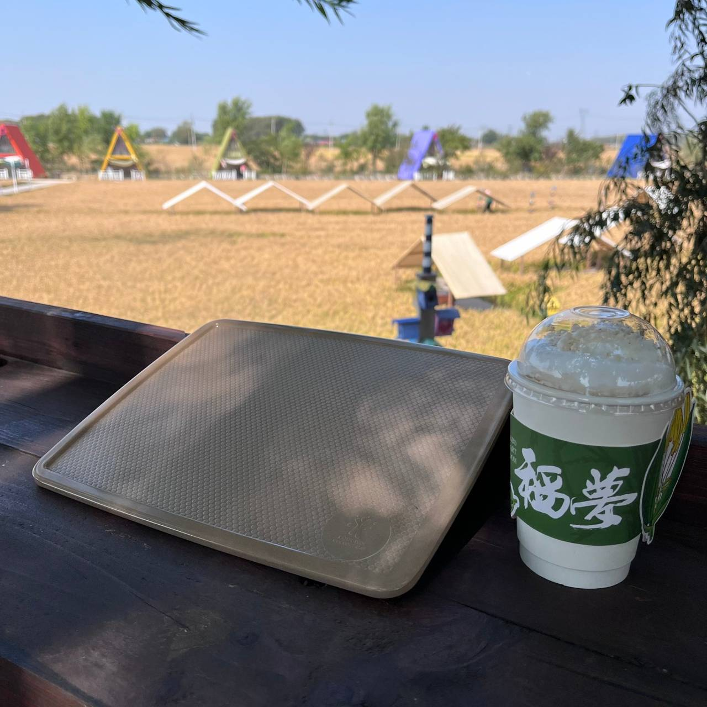
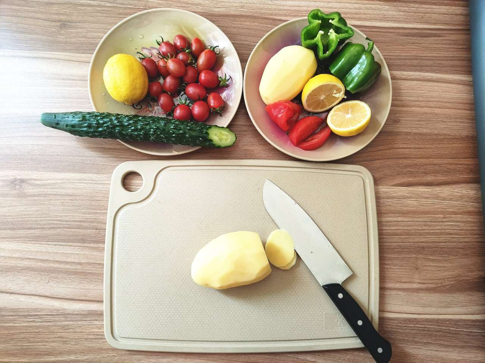
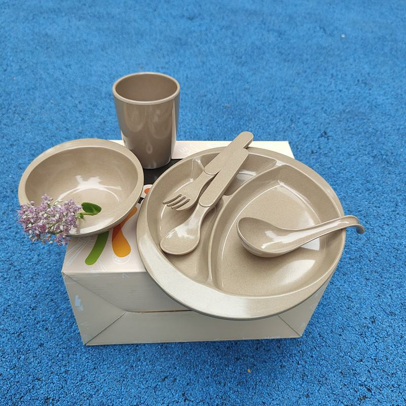
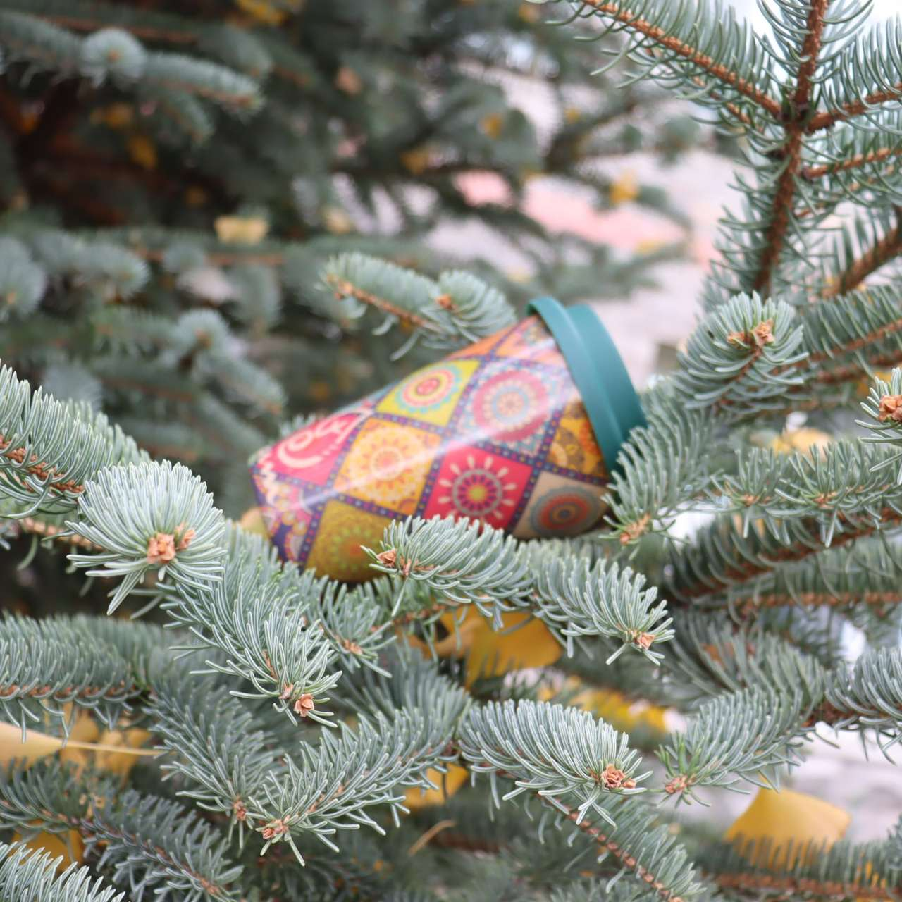

Ordering Eco Tableware Before Chinese New Year 2027: Lead Times, MOQ and the February Shutdown
It's late November. If your 2027 plan includes new tableware — a spring product launch, a restock before the outdoor season, a private-label line for Mother's Day or summer retail — the next three weeks matter more than any other window in your calendar. Chinese New Year 2027 falls on Saturday, February 6, and the stretch from mid-December to early February is simultaneously the busiest production period of the year and the last practical chance to get custom dinnerware made before the industry pauses. Here's how the timeline actually works, worked backward from the day you want goods on your shelf.

Rice husk tray and cup beside a harvested rice field — every order starts from an agricultural byproduct, and every order runs on a calendar.
Why the Shutdown Hits Harder Than the Holiday Itself
On paper, the 2027 official holiday runs from February 5 (New Year's Eve) through February 13 — nine days, according to the State Council's national holiday schedule published in November. In practice, the effect on manufacturing is much wider than nine days. Production lines typically start winding down in the last week of January as workers begin traveling home; the peak weeks before the holiday are the busiest of the entire year, because every factory is trying to finish and ship the orders queued in front of yours. After the holiday, most plants need roughly two weeks to reach normal output — staff return gradually, material suppliers restart on their own schedules, and the first production runs back are usually the orders booked before the break.
Put together, that means the effective disruption window for custom tableware is about six weeks — from late January through early March. Any order that isn't locked in before mid-January is competing with a year's worth of queued work for a shrinking number of production days. That's the real reason buyers who need Q1 or early Q2 arrivals are told to book production before mid-January, not because the factories disappear in February.
Work Backward From Your Arrival Date
The most reliable way to plan is to start from the date you need goods in hand and count backward. Total lead time has three parts: production time, ocean transit, and customs clearance plus inland delivery. Production for stock items often runs one to three weeks; fully custom work — matched Pantone colors, a molded or printed logo, custom packaging — needs more, because color samples have to be produced and approved first (colored samples typically take two to three weeks on their own). Ocean transit varies by lane and season, but as rough planning ranges:
🚢 US West Coast: typically 2–3 weeks port to port
🚢 US East Coast: typically 4–5 weeks
🚢 Northern Europe (Hamburg/Rotterdam/Felixstowe): typically 4–6 weeks
🚢 Australia and New Zealand: typically 3–5 weeks
➕ Add roughly 1–2 weeks for customs clearance and inland delivery — longer during peak-season port congestion
These ranges shift with carrier schedules and seasonal congestion, so treat them as planning figures rather than promises, and confirm the current transit estimate for your specific lane when you book. The lesson that matters here: a shipment that must arrive by mid-May for the summer retail season should be produced in February at the latest — which puts the booking decision in December or early January, not March.

Stock items like this chopping board run on shorter, more flexible lead times than custom-branded production.
The 2027 Ordering Calendar, Week by Week
Here's the sequence we walk our own customers through each year, mapped to the 2027 dates:
Now through early December — finalize the spec. Choose products, confirm quantities, and decide branding: molded logo, printed logo, or Pantone color match. Request samples if you haven't handled the material yet. This is also the right moment to review the supplier's MOQ structure, because stock and custom items follow different minimums and different timelines. Our container loading and MOQ guide walks through how that split works in practice.
Mid-December — place custom orders and approve branding. This is the comfortable window for custom production: sample approval, tooling and color matching all happen before the pre-holiday rush peaks. Orders placed here typically finish production in January, ahead of the busiest stretch.
Early January — last comfortable booking window for custom work. If your artwork and samples are already approved, an order placed in the first week of January can still usually make it into the January production queue. Every week after that adds queue risk.
Mid-January — the cutoff. For anything that must land in Q1 or early Q2, this is the practical deadline we give buyers: book production before mid-January. After that point, you're asking a factory to squeeze your order into the final pre-holiday weeks alongside everyone else's.
February — peak congestion, then the shutdown. Factories push final shipments before the break; freight space and container availability tighten. The holiday itself runs February 5–13, with most plants effectively quiet from late January through mid-February.
Late February through March — the restart. Production resumes gradually. Orders booked before the break ship first, which is one more reason early bookings arrive on schedule while late ones drift.
What to Lock Down Before You Book
Buyers who lose the least time before the shutdown are the ones who arrive with decisions already made. Before requesting a quotation, have these ready:
✅ Product list and estimated quantities per SKU
✅ Branding decision: no logo, molded logo, printed logo, or Pantone color match
✅ Print-ready logo artwork if branding is involved
✅ Packaging preference — export cartons vs. retail-ready packaging
✅ Whether you need samples first (add two to three weeks for colored samples)
✅ Your required arrival date at the destination port or warehouse
✅ Preferred inspection arrangement — many buyers arrange third-party inspection before shipment
Two of these deserve emphasis. First, samples: a week spent approving a physical sample now prevents a container of mismatched color later, and colored sample production typically takes two to three weeks — which is exactly why the sample request belongs in late November or early December, not January. Second, branding files: a molded or printed logo can't start until the artwork is final. If you're building a private-label line, our private-label rice husk tableware guide covers the artwork and branding decisions in detail.

Lock the SKU list early — every product added after the booking decision stretches the timeline.
If You Miss the Window
Missing mid-January doesn't mean waiting until April. Three fallback paths exist, each with trade-offs. Stock items — the plain-color cups, bowls and plates with no custom branding — are far less affected, because they can be pulled from existing inventory and shipped whenever freight space allows; the constraint is freight, not production. Air freight compresses transit from weeks to days and can rescue a specific launch date, but at a cost per kilogram that rarely makes sense for heavy goods like tableware — it suits a sample drop or an urgent top-up, not a full container. And for genuinely seasonal demand, the honest answer is often to plan for the next cycle: an order placed now for delivery after the restart, or timed for Q3, avoids paying peak-season premiums for rushed production.
Printed designs like this floral cup need artwork approved and production booked before the shutdown window.

Seasonal patterns sell year after year — but only for programs whose production survived the February calendar.
Frequently Asked Questions
How long do Chinese tableware factories actually stop for Chinese New Year?
The official public holiday in 2027 runs February 5–13. Individual plants vary: many effectively pause from the last week of January and take closer to three weeks fully off, then ramp back over the following two weeks. Assume roughly six weeks of reduced or zero production capacity from late January through early March, and plan bookings around it.
Is it true that nothing moves in China for a month?
No — that's an exaggeration, but an understandable one. Freight forwarders, ports and customs keep operating through the holiday, and some shipping lines maintain schedules, though space tightens. The production side is what stops. Goods already at a port can still move; goods still on a production line cannot.
Can I still order stock items during the shutdown?
Usually yes, with caveats. Unbranded stock items can ship from inventory before or shortly after the break, subject to freight availability — which is the real bottleneck in February. Custom-branded orders, however, need production time on both ends of the holiday, so those belong firmly before mid-January.
When should I place my post-CNY order?
If it isn't urgent, the sweet spot is usually late February: factories are reopened, the pre-break queue has shipped, and production slots are open again. Orders placed then typically run on normal lead times — but confirm the restart schedule with your specific supplier, since it varies by region and factory.
Planning a Q1 or Q2 2027 order?
Send us your product list, target arrival date and branding requirements. We'll reply with a quotation, our SGS food-contact test reports, the current MOQ structure and a realistic production-and-shipping schedule against the 2027 calendar — from our 5,000 m² facility with 20+ molding machines.
Send InquiryRelated reading
Three pages worth opening next, depending on what you are deciding.
- Container loading and MOQ guide — how many units fit a container, and how stock vs. custom minimums differ.
- Christmas stocking guide — the other calendar that moves tableware orders, worked backward from holiday shelf dates.
- Rice husk square plates — one of the most-ordered SKUs for retail and hospitality programs.
Published by Kaixin Eco Team · Shenyang Kaixin Technology Co., Ltd. — eco-friendly rice husk (plant fiber) dinnerware manufacturer since 2016, shipping to 40+ countries with full OEM/ODM support. Going deeper: browse the full rice husk product range, see how we work with importers on the Kaixin eco tableware homepage, or ask about current lead times through our inquiry page.